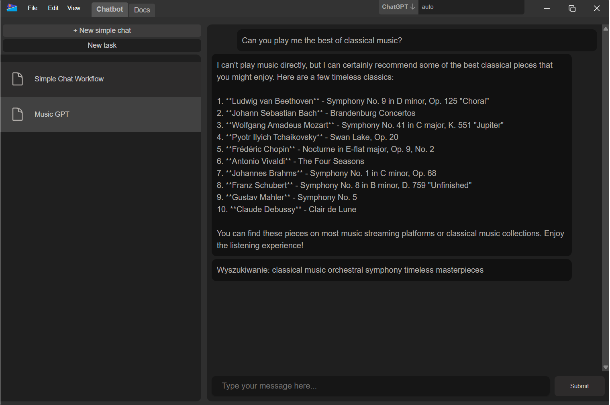

Umi Alpha
open-source LLM user interface with prompt scripting
Umi is a fully open-source LLM user interface, designed to unleash the power of prompt engineering with existing tools integration.
Main project goals
- Integration of tools eg. terminal, web browser
- Implementation of the newest prompt engineering solutions
- Specialized user interface for specific tasks
- Easy to use, deploy and configure
State of the development
Application is in prototyping state and has no installer. The concepts of how to exactly combine LLMs with external tools, use memory or command the prompts is in question. The prototype version offers couple of prompt plugins and simple chatbot usage of LLMs using ChatGPT servers.
